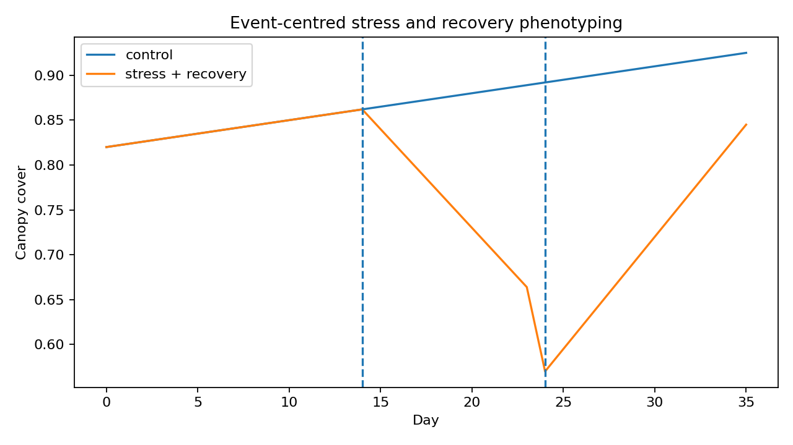

OmniPhenoR Stress and Recovery: Event-Centred Dynamic Phenotypes
Source:vignettes/v29-stress-and-recovery.Rmd
v29-stress-and-recovery.RmdPurpose
Stress experiments often contain explicit interventions: irrigation stop, heat exposure, inoculation, herbicide application, nutrient withdrawal, or rewatering. Version 0.4.0 represents those events explicitly and derives response and recovery traits without discarding the original trajectory.

1. Teaching drought-recovery series
d <- pheno_data("drought_recovery")
head(d)
#> plant_id treatment day canopy_cover green_fraction
#> 1 R01 control 0 0.8123965 0.8735933
#> 2 R01 control 1 0.8381859 0.8710737
#> 3 R01 control 2 0.8027260 0.8762825
#> 4 R01 control 3 0.8164137 0.8693282
#> 5 R01 control 4 0.8425185 0.8756920
#> 6 R01 control 5 0.8338993 0.8708855The stress treatment begins at day 14 and recovery begins at day 24.
2. Record the events
events <- pheno_event(
event = c("irrigation_stop", "rewatering"),
time = c(14,24),
type = c("stress", "recovery")
)
events
#> event time id type
#> 1 irrigation_stop 14 <NA> stress
#> 2 rewatering 24 <NA> recoveryAn event table can be stored with the project metadata so the same event definitions are reused across traits.
3. Event-centred response
r <- pheno_event_response(
d,
time = "day",
value = "canopy_cover",
event_time = 14,
group = "plant_id",
pre = 7,
post = 14
)
r
#> # A tibble: 10 × 6
#> series baseline response extreme_time extreme_value recovery
#> <chr> <dbl> <dbl> <dbl> <dbl> <dbl>
#> 1 R01 0.848 0.0677 28 0.915 0.0677
#> 2 R02 0.854 0.0586 28 0.913 0.0586
#> 3 R03 0.854 0.0521 28 0.906 0.0521
#> 4 R04 0.851 0.0641 26 0.915 0.0556
#> 5 R05 0.850 0.0586 28 0.909 0.0586
#> 6 R06 0.853 -0.284 24 0.569 -0.193
#> 7 R07 0.849 -0.274 24 0.575 -0.176
#> 8 R08 0.851 -0.281 24 0.570 -0.178
#> 9 R09 0.849 -0.263 24 0.586 -0.172
#> 10 R10 0.850 -0.271 24 0.579 -0.181The baseline is estimated from the pre-event window. The response is the largest absolute deviation from baseline in the post-event window.
4. Preserve treatment identity
r2 <- pheno_event_response(
d,
"day",
"green_fraction",
event_time = 14,
group = c("treatment", "plant_id")
)
r2
#> # A tibble: 10 × 6
#> series baseline response extreme_time extreme_value recovery
#> <chr> <dbl> <dbl> <dbl> <dbl> <dbl>
#> 1 control.R01 0.899 0.0509 25 0.95 0.0509
#> 2 control.R02 0.901 0.0489 26 0.95 0.0489
#> 3 control.R03 0.903 0.0470 25 0.95 0.0470
#> 4 control.R04 0.905 0.0447 25 0.95 0.0447
#> 5 control.R05 0.901 0.0490 26 0.95 0.0490
#> 6 stress.R06 0.894 -0.282 24 0.612 -0.175
#> 7 stress.R07 0.899 -0.276 24 0.622 -0.182
#> 8 stress.R08 0.895 -0.284 24 0.612 -0.157
#> 9 stress.R09 0.899 -0.292 24 0.607 -0.197
#> 10 stress.R10 0.904 -0.275 24 0.629 -0.189Again, treatment is not the subject. Plant identity remains explicit.
5. Stress and recovery traits
stress <- subset(d, treatment == "stress")
sr <- pheno_stress_response(
stress,
time = "day",
value = "canopy_cover",
stress_start = 14,
recovery_start = 24,
group = "plant_id"
)
sr
#> # A tibble: 5 × 6
#> series baseline stress_extreme response recovery_fraction resilience
#> <chr> <dbl> <dbl> <dbl> <dbl> <dbl>
#> 1 R06 0.838 0.674 -0.164 1.09 0.839
#> 2 R07 0.838 0.668 -0.170 1.01 0.849
#> 3 R08 0.839 0.669 -0.169 0.982 0.843
#> 4 R09 0.838 0.666 -0.172 1.17 0.852
#> 5 R10 0.839 0.675 -0.164 1.02 0.849The output includes baseline, stress extreme, response magnitude, recovery fraction, and a resilience-like trajectory index. The formula is intentionally recorded by the function implementation and should be reported rather than referred to only as a generic “resilience index.”
6. Different traits can show different response timing
cover <- pheno_stress_response(stress,"day","canopy_cover",14,24,"plant_id")
green <- pheno_stress_response(stress,"day","green_fraction",14,24,"plant_id")
cover
#> # A tibble: 5 × 6
#> series baseline stress_extreme response recovery_fraction resilience
#> <chr> <dbl> <dbl> <dbl> <dbl> <dbl>
#> 1 R06 0.838 0.674 -0.164 1.09 0.839
#> 2 R07 0.838 0.668 -0.170 1.01 0.849
#> 3 R08 0.839 0.669 -0.169 0.982 0.843
#> 4 R09 0.838 0.666 -0.172 1.17 0.852
#> 5 R10 0.839 0.675 -0.164 1.02 0.849
green
#> # A tibble: 5 × 6
#> series baseline stress_extreme response recovery_fraction resilience
#> <chr> <dbl> <dbl> <dbl> <dbl> <dbl>
#> 1 R06 0.888 0.692 -0.195 1.08 0.853
#> 2 R07 0.892 0.714 -0.178 1.12 0.847
#> 3 R08 0.889 0.713 -0.176 0.980 0.853
#> 4 R09 0.890 0.701 -0.189 1.08 0.857
#> 5 R10 0.893 0.715 -0.179 0.928 0.850Canopy closure and greenness may respond at different rates because they represent different biological processes.
7. Derivative of recovery
p <- subset(stress, plant_id == "R06")
pheno_derivative(
p[p$day >= 24, ],
"day",
"canopy_cover",
smooth = "spline"
)
#> # A tibble: 12 × 5
#> time value derivative order smoothing
#> <dbl> <dbl> <dbl> <int> <chr>
#> 1 24 0.564 0.0255 1 spline
#> 2 25 0.590 0.0255 1 spline
#> 3 26 0.615 0.0255 1 spline
#> 4 27 0.641 0.0255 1 spline
#> 5 28 0.666 0.0255 1 spline
#> 6 29 0.692 0.0255 1 spline
#> 7 30 0.717 0.0255 1 spline
#> 8 31 0.743 0.0255 1 spline
#> 9 32 0.768 0.0255 1 spline
#> 10 33 0.794 0.0255 1 spline
#> 11 34 0.819 0.0255 1 spline
#> 12 35 0.845 0.0255 1 splineThe derivative after rewatering can quantify recovery velocity. Acquisition frequency must be adequate for the derivative to be scientifically stable.
8. Environmental context
A stress event should be interpreted with environmental records. An irrigation stop during low VPD is not equivalent to the same duration under high VPD.
w <- subset(pheno_data("weather_series"), environment == "E1")
win <- pheno_environment_window(
w,
"day",
c("vpd", "rain", "soil_moisture"),
window = 5,
functions = c("mean", "sum", "min")
)
head(win)
#> environment day date tmin tmax tmean rain vpd
#> 1 E1 0 2026-05-01 18.00000 30.00000 24.00000 0.000000 1.200000
#> 2 E1 1 2026-05-02 18.68404 30.68404 24.68404 5.142301 1.405212
#> 3 E1 2 2026-05-03 19.28558 31.28558 25.28558 7.878462 1.585673
#> 4 E1 3 2026-05-04 19.73205 31.73205 25.73205 6.928203 1.719615
#> 5 E1 4 2026-05-05 19.96962 31.96962 25.96962 2.736161 1.790885
#> 6 E1 5 2026-05-06 19.96962 31.96962 25.96962 0.000000 1.790885
#> soil_moisture vpd_mean_w5 vpd_sum_w5 vpd_min_w5 rain_mean_w5 rain_sum_w5
#> 1 0.2800000 1.200000 1.200000 1.2 0.000000 0.000000
#> 2 0.3037115 1.302606 2.605212 1.2 2.571150 5.142301
#> 3 0.3153923 1.396962 4.190885 1.2 4.340254 13.020763
#> 4 0.3086410 1.477625 5.910500 1.2 4.987242 19.948966
#> 5 0.2856808 1.540277 7.701385 1.2 4.537025 22.685127
#> 6 0.2700000 1.582045 9.492269 1.2 3.780855 22.685127
#> rain_min_w5 soil_moisture_mean_w5 soil_moisture_sum_w5 soil_moisture_min_w5
#> 1 0 0.2800000 0.2800000 0.28
#> 2 0 0.2918558 0.5837115 0.28
#> 3 0 0.2997013 0.8991038 0.28
#> 4 0 0.3019362 1.2077448 0.28
#> 5 0 0.2986851 1.4934256 0.28
#> 6 0 0.2939043 1.7634256 0.279. Baseline definition matters
Possible baselines include a single pre-event measurement, mean of several measurements, model-predicted counterfactual trajectory, or paired control. OmniPhenoR’s simple event response uses a pre-event window and is transparent about that choice.
10. Recovery is not always return to baseline
A plant can resume growth without returning to the absolute pre-stress canopy value. Therefore distinguish:
- recovery of the measured trait;
- recovery of growth rate;
- return to control trajectory;
- final yield recovery.
These are different endpoints.
Reporting checklist
Report event timing, baseline window, stress/recovery phase definitions, phenotype, subject identity, acquisition frequency, environmental conditions, response direction, recovery formula, treatment assignment, missing data, and whether recovery was evaluated relative to baseline or controls.
Final perspective
Explicit event-centered phenotyping turns stress experiments from a collection of before/after images into a reproducible dynamic analysis of baseline, response magnitude, timing, and recovery.
Extended worked interpretation
Stress experiments often contain three scientifically distinct phases: baseline, perturbation and recovery. A single treatment mean across the entire experiment can hide whether genotypes differ in initial sensitivity, time to the stress extreme or capacity to recover. Event-relative traits make those components explicit.
The direction of the response must also be considered. A drought-sensitive canopy trait may decline, while a stress-related color or thermal index may increase. The implementation uses deviation from baseline so both directions can be represented, but interpretation must retain the original trait meaning.
Recovery should not be inferred from the final observation alone when the trajectory oscillates after rewatering. Inspect the complete recovery phase and, for important studies, complement endpoint recovery fractions with integrated loss or a fitted recovery rate.